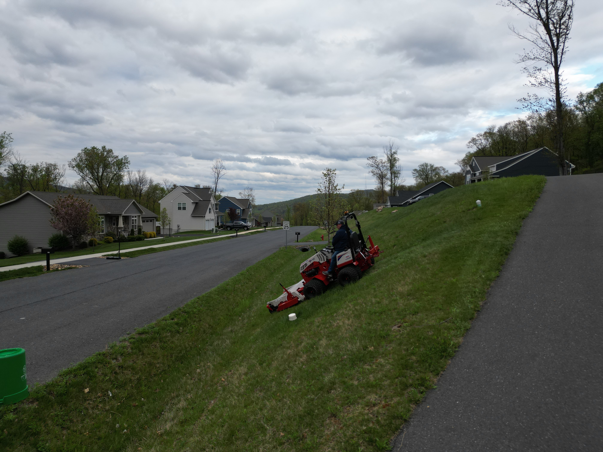
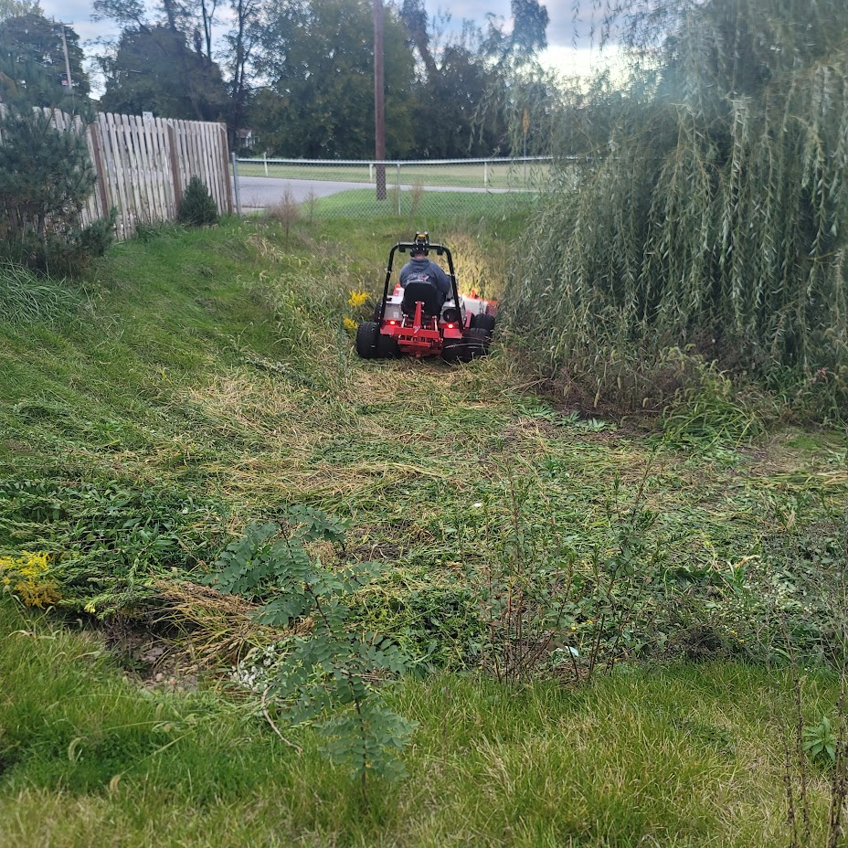
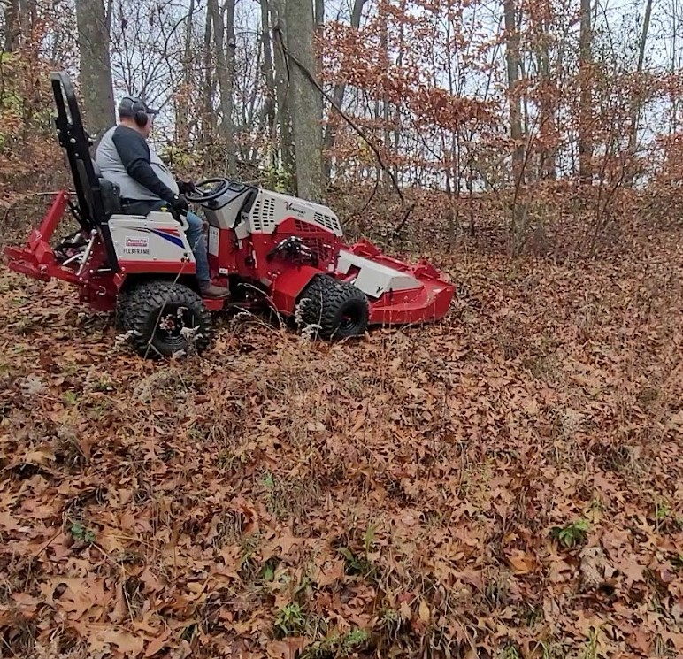
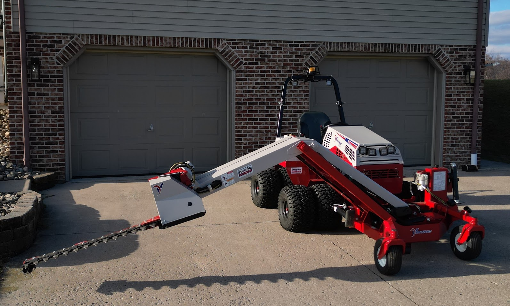

Home Page
What do we do?
Tough Cut Services, LLC is ready to tackle tough mowing environments with our Ventrac 4520Z tractor. We tackle challenging mowing environments and aim to reduce many hours of costly manual labor with increased safety.
On Safety
What makes our equipment a safer option than many conventional style tractors? The low- profile design of our tractor helps maintain a low center of gravity for optimized stability, especially when mowing slopes. The flex frame of the tractor provides for tighter turning radius, better stability, improved ground contact, consistent low ground pressure, and reduced turf disturbance as compared to traditional, fixed frame tractors. Full time all-wheel drive helps provide maximum performance in every situation. The unique ability to utilize the tractor's weight transfer system and dual wheel installation help to further improve performance and reduce disturbance.
Our Services
-
Slope Mowing
Safer solution to slope mowing needs, for slopes up to 30 degrees (58% grade), tractor features flex frame, weight transfer, dual wheels, low center of gravity, floating attachment, performance engineered tires to aid increased safety on slopes.
 -
Wet Conditions Mowing
Light footprint, all-wheel drive and flotation tires help the tractor move across the turf without creating ruts or tearing out the grass by its roots.
 -
Brush Mowing
Our heavy duty, front mounted mower deck allows us to cut the material before the tires push it down, we can cut tall brush, tough weeds or small saplings with ease.
 -
Boom Mowing
Helps maintain difficult areas with minimal labor, this attachment provides the stability and reach to manage vegetation further away from the machine, mow around water features, trim trees, trim hedges, clear trails and trim back fence rows with ease.

Clean up those rougher, tougher landscaping jobs